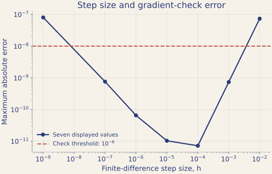

分類與筆記：準確率 1.0，能證明什麼？
AI 會寫出推導、給出結論，準確率還是 1.0。這一關檢查每個證據到底證明了什麼。 你要帶走的能力：說清楚一個 PASS 或一個準確率能證明什麼、不能證明什麼。
現場先核對推導、規劃梯度檢查，再判讀分類結果；完整推導與長版筆記可以課後補完。
任務
從 digits 裡挑出數字 3 和 8（357 筆），手刻一個 logistic 迴歸做二元分類。
二元分類是從兩個答案中選一個。這裡把像素值當輸入、數字 3 或 8 當已知答案；模型先給出機率，再依機率判斷類別。損失函數用一個數字表示預測和答案差多少，訓練就是尋找讓它變小的參數。
梯度記錄損失對各個參數的變化率，幫我們決定參數往哪邊調。本關會用小幅改動參數的方法，檢查程式算出的梯度是否合理。
「二元分類」在做什麼？logistic 迴歸為什麼長那樣？
跟 Lab 1 的分群不同，這次我們有答案：每張圖都知道它是 3 還是 8。 目標是學一個規則，看到新的圖能判斷它是哪一個。這叫監督式學習。
最直覺的想法，以及它的問題
最簡單的規則是「算一個加權總和 $z=\mathbf{w}^\top\mathbf{x}+b$，$z>0$ 說是 8，否則說是 3」。 這就是一個超平面把空間切兩半，完全是線代的東西。
問題是：這個規則只吐 0 或 1，沒有「有多確定」的資訊， 而且它不連續，沒辦法微分，也就沒辦法用微積分找最佳的 $\mathbf{w}$。
sigmoid：把實數壓成機率
所以改成先算 $z$，再用一個函數把它壓到 $(0,1)$ 當成「是 8 的機率」：
$$\sigma(z)=\frac{1}{1+e^{-z}}$$這個函數有幾個剛好合用的性質：
- $z\to+\infty$ 時趨近 1，$z\to-\infty$ 時趨近 0，$z=0$ 時剛好 0.5
- 處處可微，而且導數漂亮得不像話：$\sigma'(z)=\sigma(z)\bigl(1-\sigma(z)\bigr)$ （值得自己動手驗一次，就是商法則）
- 單調遞增，所以「$\sigma(z)>0.5$」跟「$z>0$」是同一件事， 決策邊界仍然是那個超平面，沒有變複雜
名字裡有「迴歸」卻在做分類，是歷史遺留的命名，別被騙了。
什麼是「概似」？為什麼要取 log？
模型說「第 $i$ 張圖是 8 的機率是 $p_i=\sigma(z_i)$」。 如果它的真實答案 $y_i=1$（是 8），模型給的機率就是 $p_i$； 如果 $y_i=0$（是 3），模型給的機率是 $1-p_i$。兩種情況可以合寫成
$$P(y_i\mid\mathbf{x}_i)=p_i^{\,y_i}(1-p_i)^{1-y_i}$$（把 $y_i=0$ 或 $1$ 代進去檢查一下，就是上面那兩句話。） 假設各筆資料獨立，看到整批資料的機率就是連乘：
$$L(\mathbf{w})=\prod_{i=1}^{n}p_i^{\,y_i}(1-p_i)^{1-y_i}$$這個 $L$ 叫概似（likelihood）。 「最大概似估計」就是：挑一組參數，讓「模型認為這批資料會發生」的機率最大。 這是統計學裡最基本的參數估計原則。
為什麼取 log
- 連乘變連加：$\log\prod=\sum\log$，微分立刻好做很多
- 數值不會爆炸：許多介於 0 和 1 的數連乘，可能小到浮點數無法表示而變成 0
- 不改變答案：$\log$ 是嚴格遞增的，最大化 $L$ 跟最大化 $\log L$ 的解完全相同
習慣上會再取負號、除以 $n$，把「最大化概似」變成「最小化平均損失」， 這樣就跟其他最佳化問題長得一樣了。得到的就是本關要驗證的那個 $L(\mathbf{w})$。
接下來找最小值要用的梯度、偏微分、鏈鎖律，全部是你微積分課上的東西， 只是變數多了一點。
梯度下降在做什麼？
你在微積分學過：梯度 $\nabla L(\mathbf{w})$ 指向函數上升最快的方向。 那想下降就往反方向走：
$$\mathbf{w}\leftarrow\mathbf{w}-\eta\,\nabla L(\mathbf{w})$$$\eta$ 是步伐大小（learning rate），本關用 0.5。反覆走，直到走不動為止。
為什麼不像 k-means 那樣「令導數為零、直接解」？因為 $\nabla L=\mathbf{0}$ 在這裡是一組沒有閉式解的非線性方程式（$\sigma$ 卡在裡面）， 只能用迭代的方式逼近。
這也是為什麼「驗證梯度公式對不對」這件事在本關這麼重要： 梯度是整個過程唯一的方向感，公式寫錯，後面跑再多次都是往錯的方向走。
過擬合與正則化是什麼？（本關最後會用到）
過擬合：模型把訓練資料背下來了，包括裡面的雜訊， 所以在訓練資料上表現完美，換一批新資料就崩。 症狀之一是權重變得很大：模型用極端的係數去遷就個別樣本。
正則化的做法是在要最小化的目標裡，加一項懲罰大權重的東西。 最常見的 L2 正則化：
$$L_{\text{reg}}(\beta,b)=L(\beta,b)+\frac{\lambda}{2}\|\beta\|^2$$這裡 $\beta$ 是特徵的權重，$b$ 是截距；平方範數只計算權重，不包含截距。$\lambda$ 越大，懲罰越重。 效果是逼模型「除非證據夠強，否則不要把係數調大」。
本關會看到正則化的另一個作用，比防過擬合更基本：
在本例兩個類別都存在時，正的 L2 懲罰能讓原本沒有有限最小值點的問題得到有限且唯一的解。
稍後 sklearn 的 L2 範例，在未加樣本或類別權重時，對應 $\lambda=1/(nC)$，其中 $n$ 是訓練樣本數；$C$ 越小，懲罰越重。
sklearn 的 fit / predict 慣例
scikit-learn 裡幾乎每個模型都長同一個樣子，學會一個就會全部：
| 寫法 | 意思 |
|---|---|
m = LogisticRegression(...) | 建立模型，括號裡放超參數（例如 C、max_iter） |
m.fit(X, y) | 訓練。把資料餵進去，模型把學到的參數存在自己身上 |
m.coef_ m.intercept_ | 學到的權重與截距。結尾有底線是 sklearn 的慣例，代表「訓練完才有的東西」 |
m.predict(X) | 吐出預測的標籤（0 或 1） |
m.predict_proba(X) | 吐出機率，兩欄分別是「是 0 的機率」「是 1 的機率」 |
m.score(X, y) | 準確率，也就是猜對的比例 |
PCA 那類轉換器則是 fit 之後用 transform（做轉換）
與 inverse_transform（轉回去）。Lab 2 用的就是這組。
把像素矩陣加上一欄 1 得到 $X_b$，並把截距放在參數向量 $w$ 的最後一項。令 $z=X_bw$、$\sigma(z)=\dfrac{1}{1+e^{-z}}$，平均對數損失與其梯度為
$$L(w)=\frac1n\sum_i\Bigl[\log\bigl(1+e^{z_i}\bigr)-y_iz_i\Bigr], \qquad \nabla_wL=\frac1nX_b^\top\bigl[\sigma(X_bw)-y\bigr]$$AI 會很快寫出來。問題是：你怎麼知道它沒寫錯？
動手
先照平常的方式問
輸入 /new 開新對話，貼上這句：
用 digits 的 3 和 8 手刻 logistic 迴歸，寫出推導，跟 sklearn 比較，確認你寫的是對的，並告訴我該怎麼判斷兩個模型一樣。等它回答時，每個權限要求都讀一下。回答後先別追問，自己檢查三件事：
- 推導：代入一個例子驗號。$y=1,z=0$ 時損失應該是 $\log 2\approx 0.693$；$y=1$ 且 $z$ 很大時損失應該接近 0，$z$ 很負時應該很大。
- 做了你沒要求的決定嗎：有沒有加正則化、切訓練／測試集、換演算法？按
!用grep -n "C=\|penalty\|train_test_split" *.py查程式，再對照摘要有沒有寫。 - 它的結論：它說判斷兩個模型一樣要比什麼？比權重有標準答案嗎？後面第 4 步會回來核對。
2026-11-02，OpenCode 1.19.5 互動模式，beam-free 跑 5 次。實際算出的數字沒有發現錯誤，每次都回報和 sklearn 非常接近。但：
- 5 次都自行加上 L2 正則化（
C=1.0），其中 3 次在最後的摘要沒有提到 - 4 次自行切出測試集
- 5 次都沒有做
loss與grad的數值檢查
另一次紀錄更清楚：它先做無正則化的版本，和 sklearn 的係數差 7.6、機率最大差 0.56、預測一致率 0.98；改成 L2、C=1 後，差距變成 1.6e-6，最後摘要只報了「一致」。
加 L2 是合理的做法，因為資料可分時權重沒有有限解；它的筆記多半也寫到這點。問題不在它算錯，而在它比的已經不是你以為的模型，只讀摘要看不出來。
不過 big-pickle 目前唯一完整的 1 次做得很好：它把 L2 和無正則化都跑了，摘要也講明 3 和 8 線性可分、無正則化沒有唯一解。這次花了近 5 分鐘、25 個權限要求。如果你的 AI 也寫得這麼清楚，還是用上面的 grep 對一次：寫得清楚不等於寫得正確，你要自己看過才知道。
規劃：自己設計梯度檢查
梯度算錯，訓練就會走錯方向。可以用損失函數本身去逼近梯度，再和解析梯度比：
先把題目定清楚，後面的數字才對得上。貼上這句，把程式整理回你要的版本：
把程式改成下面這個版本，存成 lab3_logistic.py，先不要訓練：
- 使用全部 3 和 8，不切分資料；像素除以 16；8 設為 1、3 設為 0
- 最後加一欄 1 作為截距，所以 Xb 有 65 欄
- 不加正則化。loss 用本頁的平均對數損失，grad 用本頁的公式
印出資料 shape 後停止。接著自己寫下梯度檢查的 prompt。先決定：檢查幾個維度？在哪個點檢查？用哪些步長？怎樣算過關？寫完貼給它，看它有沒有照做。
3 和 8 的資料中有 10 個像素恆為常數，這些維度的解析梯度恰好是 0。如果相對誤差直接除以 $|\nabla L|$，就會得到 nan。只抽樣幾個維度也可能完全沒碰到它們。
寫完再對照：一份參考的清楚版與結果
請加一段有限差分梯度檢查：
- 用中央差分，檢查全部 65 個維度，不要抽樣
- 步長 h 掃過 1e-2 到 1e-9，每個 h 印出最大絕對誤差與最大相對誤差
- 使用 np.random.RandomState(0).normal(size=65)*0.01 作為檢查點 w0
- 最大絕對誤差小於 1e-8 記為 PASS，否則記為需調查；相對誤差分母至少取 1e-12
- 做成表格，用 uv run python 執行，只加梯度檢查，完成後停止
深入：為什麼步長太大或太小都可能 FAIL
為什麼兩頭都會 FAIL
中央差分的總誤差有兩個來源，方向相反：
$u$ 是浮點精度（float64 約 $2.2\times10^{-16}$）。 $h$ 太大時泰勒展開的高階項來不及被忽略； $h$ 太小時 $L(w+h)$ 與 $L(w-h)$ 幾乎相等，相減會損失有效位數。 令導數為零可得最佳量級 $h\sim u^{1/3}\approx 6\times10^{-6}$。 這份輸出的最佳位置約在 $10^{-4}$ 附近；實際位置還受常數、資料與誤差判準影響。
上表兩頭的 FAIL，程式完全沒問題。
所以看到梯度檢查 FAIL 時，正確的說法是「有不一致，要查原因」：
可能是公式錯、步長不當、捨入誤差，或該維梯度本身接近 0。
反過來說，PASS 也只提供局部數值證據：如果 loss() 和 grad()
一起照著同一個錯誤的目標函數寫，這關照樣全過。因此仍要對照目標公式，不能只看數值 PASS。
驗證：PASS 到底證明了什麼？
下面兩個錯誤是講師設計後注入的，不是 AI 犯的。先預測梯度檢查的結果，再請它跑。數值會隨資料縮放與檢查點不同，看 PASS/FAIL 的方向就好：
請做兩個實驗，不要修改原本的 loss 和 grad，完成後停止：
A. 把 loss 和 grad 一起換成均方誤差 mean((σ(z)-y)^2) 與它正確的梯度
B. loss 不變，只把 grad 乘以 2
兩個都用同一段梯度檢查跑一次，印出最大絕對誤差與 PASS/FAIL。
梯度檢查只證明 grad 和 loss 彼此一致，不證明 loss 是你要的那個函數。所以第 1 步要自己核對公式，這一步代替不了。
想：準確率 1.0 能證明什麼？
先預測：手刻和 sklearn 的準確率如果都是 1.0，兩個模型一樣嗎？權重會一樣嗎？然後一次跑完：
用梯度下降訓練全部資料（lr=0.5，20000 次迭代），不切分資料，
在第 100、1000、5000、10000、20000 次印出 ||w|| 與損失。
訓練完跟 sklearn 的 LogisticRegression 比對（無正則化用 C=np.inf），印出：
1. 兩邊的準確率與 ||w||
2. 預測標籤是否完全一致
3. 預測機率的最大差
4. 兩個權重向量的夾角餘弦
只印結果，判讀交給我。損失一直往 0 掉，$\|w\|$ 一直長，沒有要停的跡象。兩邊準確率都是 1.0，但權重大小差了五倍、機率也不同。哪一邊是對的？
這份資料能被一條線性邊界完全分開。這時無正則化的損失沒有有限的最小值點，權重可以一直變大，所以「手刻權重 vs sklearn 權重」根本沒有標準答案可比，兩邊只是停在不同位置。回頭核對第 1 步：AI 的結論有考慮到這件事嗎？如果它自行加了正則化，權重當然對得上，但那已經不是你要求的模型，也要寫進結論。
準確率相同也不代表決策邊界相同。不同的超平面可以把同一批資料都分對，對新資料的機率預測卻不一樣。準確率只是「表現檢查」，不能證明實作正確。
深入：用線性規劃確認可分性與推導其影響
證明它真的線性可分
「$\|w\|$ 一直變大」只是個徵兆，不是證明。要真的確認，解一個線性可行性問題： 以下 $\mathbf{x}_i$ 表示已加上常數 1 的第 $i$ 筆資料，$v$ 的最後一項是截距。令 $t_i=2y_i-1\in\{-1,+1\}$，找 $v$ 使得
如果這組不等式有解，就代表存在一個嚴格分隔超平面。
請用 scipy.optimize.linprog 解這個線性可行性問題：
找 v 使得對所有 i 都有 t_i * (x_i · v) >= 1，其中 t_i = 2*y_i - 1。
如果有解，v 的最後一項是截距；印出幾何間隔 min(t*(Xb@v)) / ||v[:-1]||，分母不含截距。
然後對找到的 v，計算 c = 1, 5, 20, 100, 500 時的 L(c*v)。這就是完整的論證：存在嚴格分隔向量 $v$，沿著它放大 $c$，損失 $L(cv)=\frac1n\sum_i\log\bigl(1+e^{-c\,t_i\mathbf{x}_i^\top v}\bigr)\to 0$， 而任何有限的 $w$ 都給出 $L(w)>0$。
對線性可分的資料，無正則化 logistic 迴歸的最大概似估計不存在有限解。 所以「手刻係數 vs sklearn 係數」根本沒有標準答案可以比。兩邊都只是在往無窮遠的路上停在不同位置。
「把 $w$ 放大損失一定更小」這句話只在 $w$ 已經分對全部樣本時才成立。 如果還有分錯的點，放大只會讓那些點的損失爆掉。 另外，這個結論只適用於這 357 筆樣本，不代表所有手寫的 3 和 8 都線性可分。
深入：正則化把問題變回有解
加上 L2 正則化（sklearn 用 l1_ratio=0, C=1.0）再跑一次，
比較 ||w|| 跟準確率。
$\|w\|$ 從 97.9 掉到 6.0，準確率完全沒變。
這裡 sklearn 的 L2 懲罰作用於不含截距的特徵權重 $\beta$，以本章平均損失的記法，懲罰項為 $\|\beta\|^2/(2nC)$。上方顯示的 $\|w\|$ 則仍包含截距，方便與前面的輸出對照。
在本例兩類樣本都存在的條件下，加入正的 L2 懲罰後有有限且唯一的解。它除了限制權重大小，也解決了這個例子原本沒有有限最小值點的問題。
最後：把它變成一份筆記
把今天的發現寫下來。這份短筆記的重點不是讓 AI 寫得漂亮，而是你要讀過每一句，抓出它說過頭的地方。
請把這次已完成的步驟整理成 notes/logistic.md，寫給之後複習的我看，分三段：
1. 觀察：實際執行的指令與輸出數字
2. 解釋：損失與梯度的意義、為什麼 ||w|| 一直變大
3. 不能證明什麼：梯度檢查 PASS、準確率相同，各自不能證明什麼
數學式用 $...$ 與 $$...$$。沒有實際跑過的內容不要寫成已完成。寫完後核對：每個數字都對得上剛才的輸出嗎？有沒有哪句結論比證據說得更滿？如果都沒有，也請寫下你怎麼確認的。結論是「AI 這次是對的」也可以，只要說得出憑據。
課後：補成包含完整推導的筆記
完成前面的深入補充後，再用這份需求擴充筆記。範例中的數值要核對自己實際的執行結果。這一步比較花時間，不必在現場做。
請把今天這一輪的推導與發現整理成 notes/logistic.md，內容包含：
1. 從負對數概似到 L(w) 的完整推導（用 $...$ 與 $$...$$ 寫數學式）
2. 梯度的推導
3. 有限差分梯度檢查：原理、誤差分解 E(h) ≈ A h² + B u/h、為什麼兩頭都會 FAIL
4. 線性可分導致 MLE 不存在的完整論證（含那個「只在已分對時成立」的但書）
5. 為什麼準確率相同不代表決策邊界相同
6. 正則化怎麼讓問題重新有解
寫給三個月後的我看，那時我已經忘記細節了。
因為檔案可以進 git。下次你叫 agent 補充或修改這份筆記，
git diff 會告訴你它到底改了哪幾行。
你不必重讀整份文件去找差異，也不會不知不覺讓它把你原本寫對的東西改掉。
詳見第 07 章。
想練習把課本、講義或文獻接到自己的 Lab，可接著讀課後補充：整理數學文獻與筆記。
課後若想保留筆記的修改歷程，再依Git 安全網建立版本紀錄。現場先確認 notes/logistic.md 存在，並讀過內容。
收尾：回答開場的問題
回到開場那句：AI 這麼強，為什麼還要自己想、自己驗證？
先誠實看今天的結果：AI 能跑程式時，數字幾乎都是對的。今天 Lab 2、Lab 3 的錯誤，也有不少是我們故意放進去的。所以答案不是「AI 很爛」，而是：
- 它算對了數字，回答的卻不一定是你要問的那一題（Lab 1）
- 它說驗證通過，不代表真的跑過，也不代表錯了它抓得到（Lab 2）
- 它的做法可能很合理，但摘要沒告訴你它換了題目（Lab 3）
只有你知道自己要問什麼，也只有你要為結論負責。如果 AI 今天全都做對了，你怎麼知道的？答得出來，就是今天學到的東西。
交一則結論
從今天挑一個結果，寫下「主張、輸出、限制」。結論可以是「AI 這次是對的」，只要你說得出憑據。
把一個問題寫成規則，再測它
挑一個你今天真的遇到的情況，寫成一條規則加進 AGENTS.md。寫具體一點，它才做得到：
# 例子，請換成你自己遇到的問題
## 數學程式的規矩
- 驗證要印出實際數值，並列出通過條件比了哪些量。
- 宣告通過前，說明這組檢查抓不到哪些錯誤。
- 最後的摘要要寫出沒被要求、由你自己做的決定，例如前處理、正則化、切分資料。規則寫好不代表它會照做。輸入 /new，把今天其中一句模糊的 prompt 再問一次，檢查它有沒有照規則做。
想多練習，看用 AGENTS.md 寫下專案規則。
檢查清單
如果還有時間
課後練習：從概似推導損失與梯度
理解前面的操作後，可以請 agent 陪你逐步推導，遇到不熟的符號就停下來問：
先定義 Bernoulli 模型的成功機率，解釋為什麼把獨立樣本的機率相乘。
從負對數概似逐步推導本頁的平均損失，再推導梯度。
每個新符號先定義，每一步說明用了哪個微分規則；先不要寫程式。- 把梯度檢查的表格畫成 log-log 圖（$h$ 對最大誤差），觀察是否有步長過大或過小時誤差增加的趨勢。截斷誤差常呈 $h^2$、捨入項常呈 $1/h$ 的量級，但有限的取樣點與具體函數不保證畫出理想斜率。
- 換成 3 vs 5（比較難分的一對），重跑可分性檢查。若未找到嚴格分隔，先核對求解器狀態；這仍不足以保證無正則化的 MLE 有有限且唯一的解。還可能有準完全分離或特徵相依，因此不要直接要求兩套方法的係數一致。
- 掃過 $C$ 從 $10^{-3}$ 到 $10^{3}$，畫 $\|w\|$ 與訓練／測試準確率的曲線，看正則化路徑長什麼樣子。